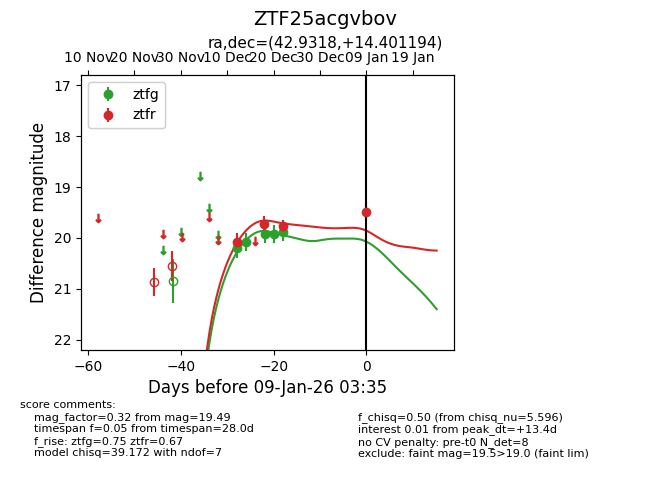
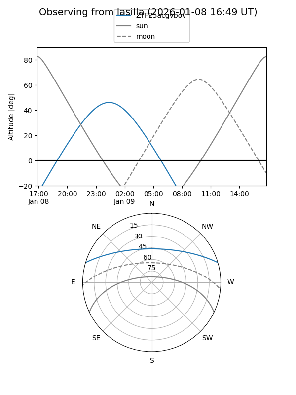
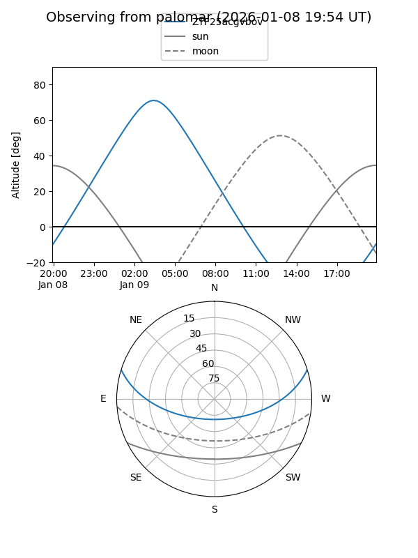
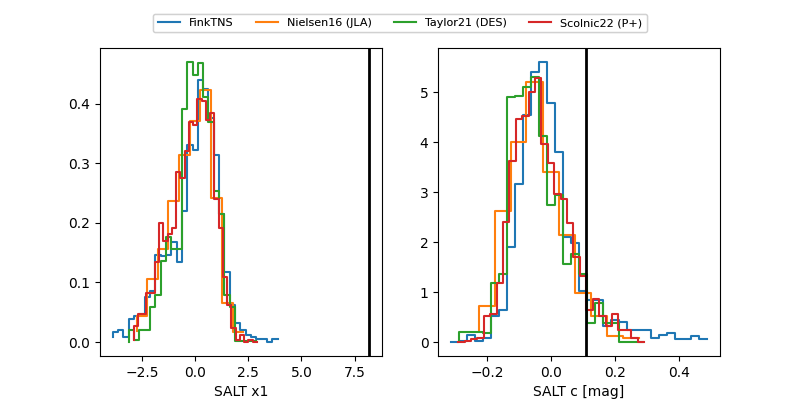

ZTF25acgvbov
Target ZTF25acgvbov at 2026-01-09 03:35
Aliases and brokers:
FINK:
Lasair:
ALeRCE:
alt names
ZTF25acgvbov (ztf,fink_ztf)
Coordinates:
equatorial (ra, dec) = 42.9318,+14.40119
equatorial (HMS+DMS) = 02:51:43.63,+14:24:04.30
galactic (l, b) = (161.7363,-39.24083)
Flags:
Photometry:
last ztfg=19.88, ztfr=19.49
5 ztfg, 4 ztfr detections
Lightcurve

Visibility


Additional plots
